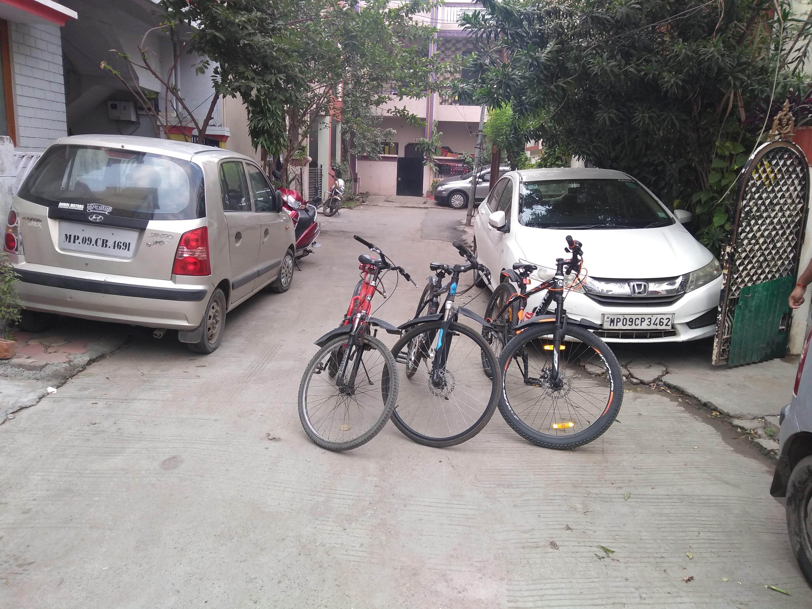
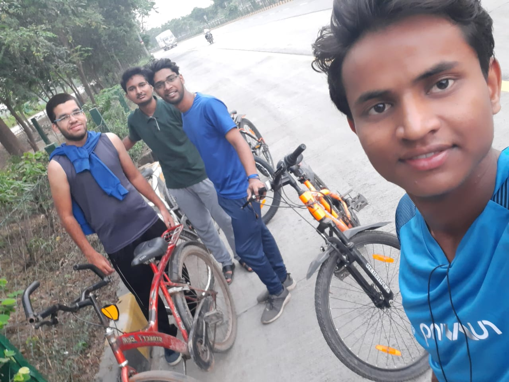
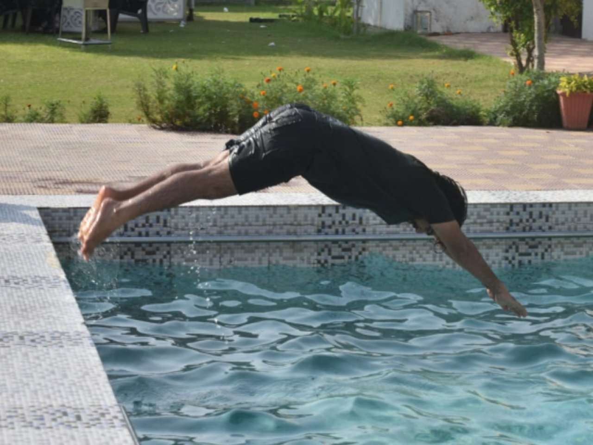
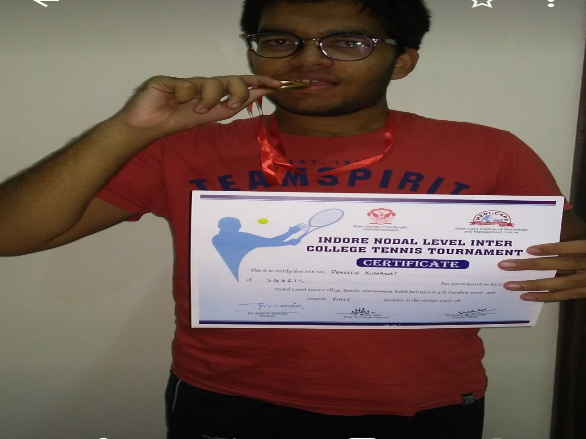
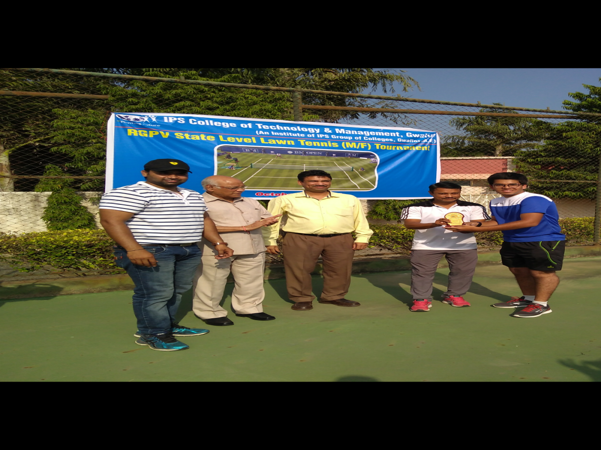

Hobbies:
Cycling
Cycling is the best activity in my daily routine,as it is the only time in whole day which I spends with myself. My day starts at 05:00 a.m., then I go for cycling around the city(approx 15km journey) which takes approx 50mins to complete. The one thing that is most interesting in this activity is, it teaches me to compete with myself. If I complete the distance in 48 mins on Day 1,I try to do better on Day 2 and so on...
Swimming
In school days I had learnt swimming, but after 10 years when I again went into the pool, I was anxious could not swim. My brother boosted my confidence and for the next 2 weeks he only made me practice "how to float?". It was stressful in starting, what am I doing? Then on the 15th day he allowed me to swim on the deeper side, that day I learnt the most important thing, if your basics are strong you can complete the task easily....
Lawn Tennis
In my school days, I was one of the best lawn tennis players in my school. During my first year of college, I participated in the lawn tennis tournamet, first it was nodals, second it was zonals and we won both of them. Then came the university level tournament and we were eliminated in the second round. One important thing I learnt from this tournament is, if we don't work hard enough to get success in a field, we will never be successful. There is no such thing like luck in life, it is always the hardwork"





